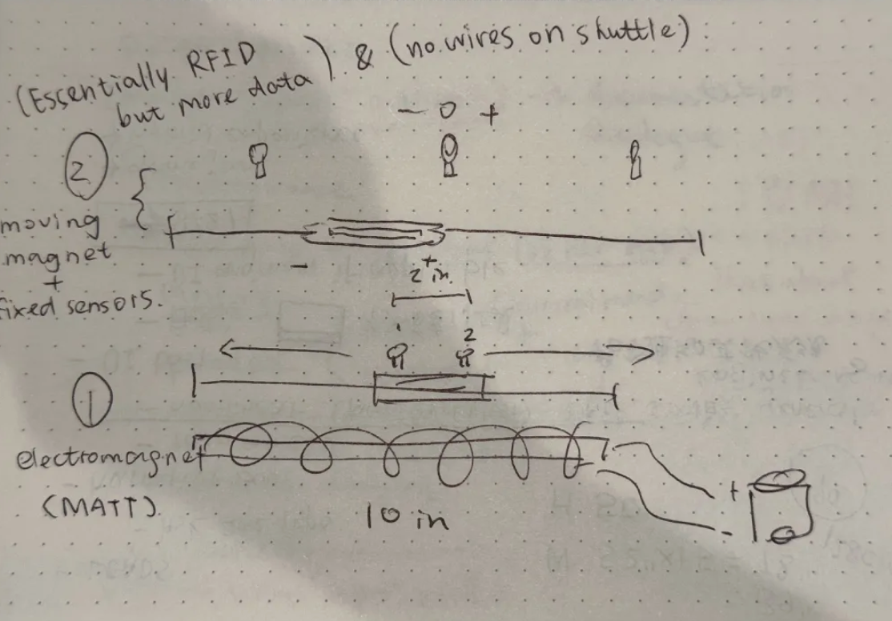
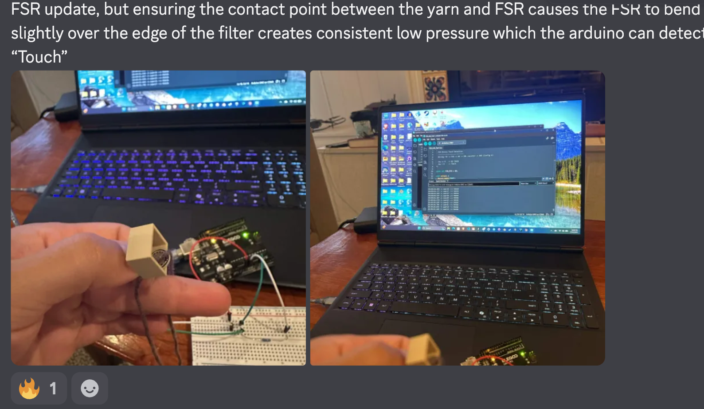

Resolution is a narrative alt-controller experience
about memory, loss, and the act of remembering.
Players revisit forgotten folders on an old
Windows-style desktop and use a custom weaving
interface to gradually bring low-resolution memories
back into focus.
The project connects physical weaving interactions
with digital gameplay, turning actions such as
pulling, moving, and manipulating thread into
meaningful interactions within the game.
Role:
Prototype Engineer (Hardware + Fabrication)
Project Type:
Narrative Alt-Controller Experience
Engine:
Unity
Focus:
Physical Prototyping, Electronics,
Fabrication & Controller Development
Development:
Team-Based Project
Alt-Controller Experience
Instead of interacting with the game through a
traditional controller, Resolution uses a custom
physical weaving interface as its primary form
of interaction.
Physical Interaction:
Players manipulate a tangible weaving system
rather than relying solely on buttons,
keyboards, or conventional controllers.
Memory Reconstruction:
Physical actions gradually restore fragmented
and low-resolution memories within the game.
Tactile Gameplay:
The controller turns physical motion and
material interaction into gameplay input.
Narrative Integration:
The act of weaving becomes part of the game's
themes of memory, reconstruction, and loss.
Project Documentation
Physical Controller Development
The team is developing a custom weaving controller
that combines mechanical fabrication, electronics,
sensors, and game-engine integration.
Mechanical Prototyping:
Developing physical mechanisms that recreate
recognizable weaving actions while remaining
practical for gameplay.
Sensor Integration:
Exploring sensors and encoders that can detect
movement, position, rotation, and interaction
with the weaving interface.
Fabrication:
Iterating on custom components through CAD,
3D printing, assembly, and physical testing.
Unity Integration:
Translating physical controller data into
responsive gameplay interactions.
Team Prototyping & Development
Mechanical Prototype

Hardware Testing (Press volume icon)
Controller Development

My Role
I recently joined the Resolution team as a
Prototype Engineer focused on fabrication,
contributing to the development and production of
the project's custom physical controller.
Physical Prototyping:
Supporting the development and iteration of
mechanical controller concepts.
Fabrication:
Producing and refining physical components
used in the controller prototype.
Hardware Development:
Assisting with the integration of sensors,
electronics, and physical interaction systems.
Prototype Testing:
Evaluating physical mechanisms and helping
identify improvements for reliability,
usability, and responsiveness.
Team Collaboration:
Working alongside designers, engineers,
artists, and other developers to connect
physical interaction with the game's
digital experience.
Development currently in progress.
Prototyping & Fabrication
The physical controller is being developed through
an iterative prototyping process combining mechanical
design, electronics testing, fabrication, and
gameplay experimentation.
Concept and mechanism exploration
CAD and mechanical prototyping
3D printing and component fabrication
Sensor and electronics integration
Physical assembly and testing
Unity gameplay integration
Iteration based on usability and gameplay testing
Individual fabrication work will be added as
development progresses.
Current Development
The controller is currently undergoing active
prototyping as the team experiments with different
approaches for detecting weaving motions and
translating them into reliable gameplay input.
Mechanical components, sensors, and interaction
techniques continue to be tested and refined as
the physical and digital sides of the project
are brought together.